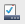

Taskbar and Navigation properties

x
Taskbar
Navigation
Jump Lists
Toolbars
Lock the taskbar
Auto-hide the taskbar
Use small taskbar buttons
Taskbar location on screen:
Bottom
Left
Top
Right
Taskbar buttons:
Always combine, hide labels
Combine when taskbar is full
Never combine
Notification area:
Customize...
Show Windows Store apps on the taskbar
Use Peek to preview the desktop when you move the mouse to the show desktop button at the end of the taskbar
How do i customize the taskbar?
Corner Navigation
When I point the upper-right corner, show the charms
When I click th e upper-left corner, switch between my recent apps
Replace Command Prompt with Windows PowerShell when I right-click the lower-left corner or press Windows key+x
Start screen
When i sign in or close all apps on the screen, go to the desktop instead of start
Show my desktop background on Start
Show Start on the display I'm using when I press the Windows logo key
Show the Apps view automatically when i go to Start
Search everywhere instead of just my apps when I search from the Apps view
List desktop apps first in the Apps view when it's sorted by category
Number of recent items to display in Jump Lists:
Privacy
Store recently opened programs
Store and display recently opened programs in Jump Lists
Select which toolbars to add to the taskbar.
Address
Links
Touch Keyboard
Desktop
OK
Cancel
Apply